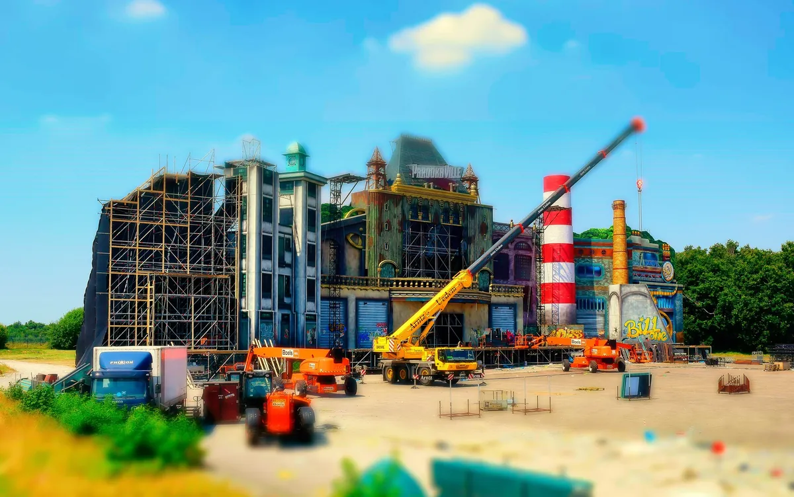
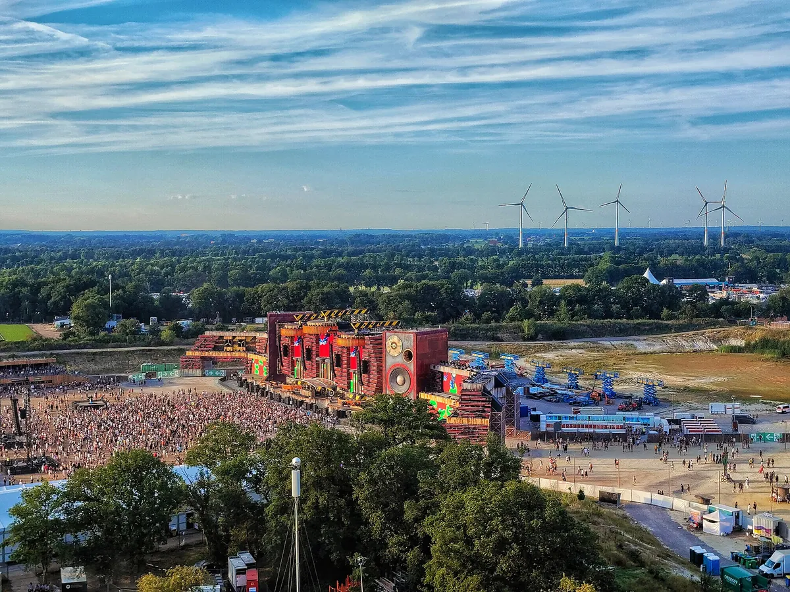
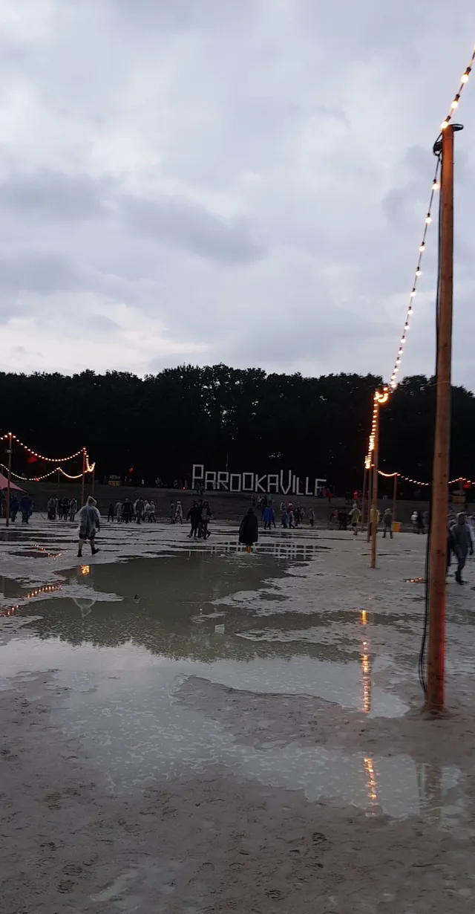
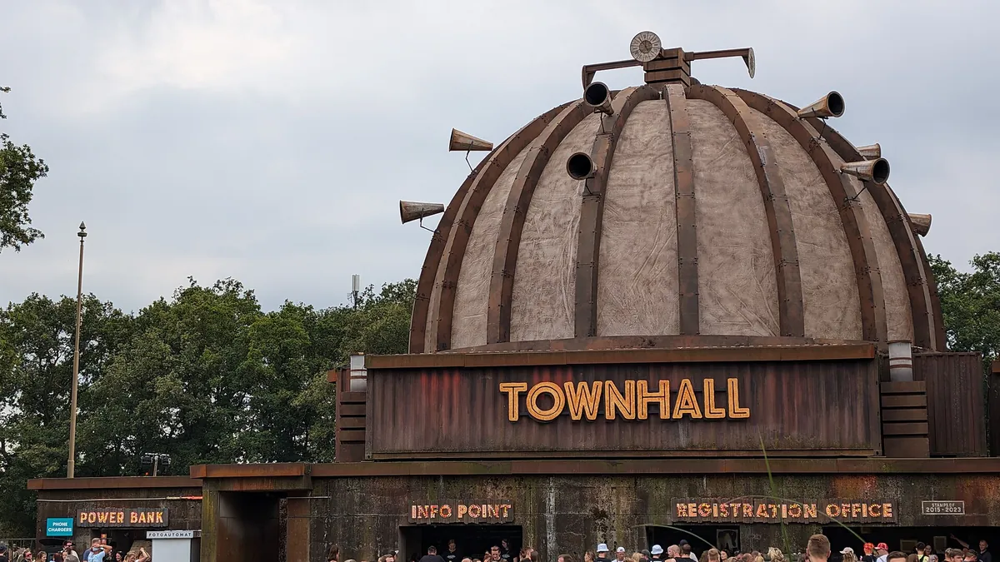
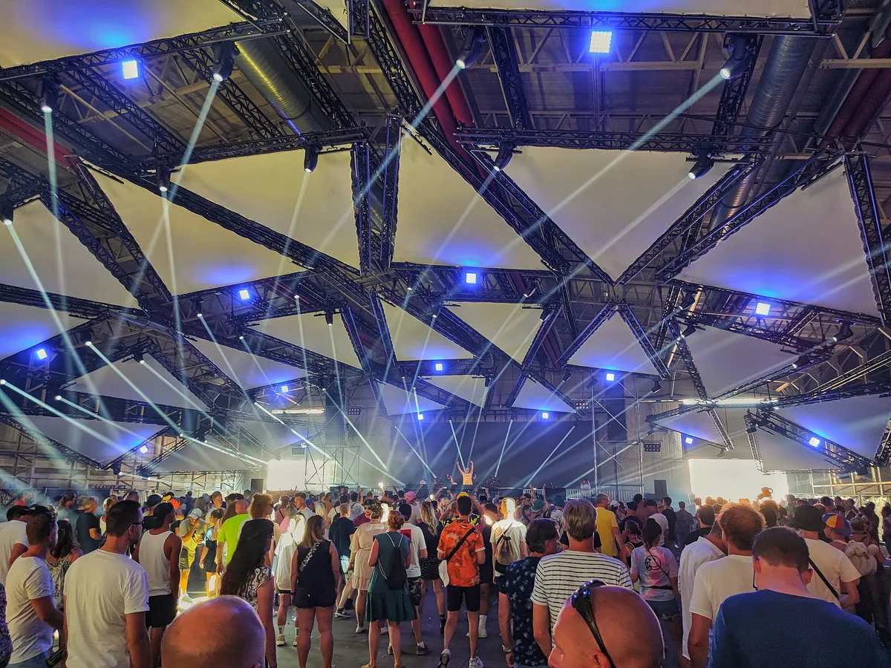
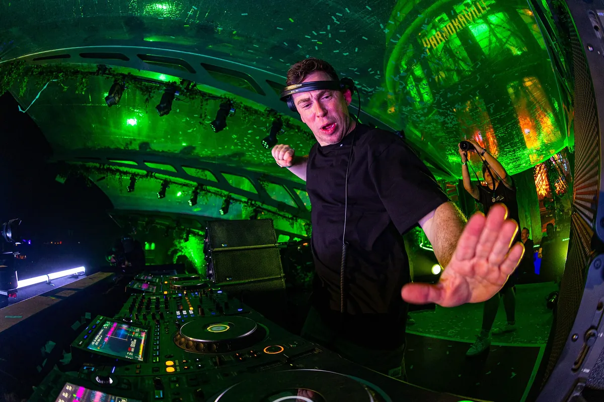

Parookaville
Parookaville Festival
A festival staged as a city, three days every July on an old RAF airbase at Weeze, near the Dutch border. Where it happens, how big it is, who runs it, and what plays past the Mainstage.
A festival staged as a city.
Parookaville began with an idea from abroad. In 2015 three friends set out to build a festival world of the kind they had seen at Tomorrowland and Burning Man, and put it on an old airfield at Weeze, in the far west of Germany. In 2026 the readers of DJ Mag voted it the tenth best festival in the world.
What is Parookaville to someone who has never been? This guide covers where Parookaville happens and when, how big it is, who started it and who runs it now, and why a festival dressed up as a town caught on. Then it answers the question this site is here for: past the Mainstage, what does Parookaville actually play?
Where Parookaville happens.
Where is Parookaville? The Parookaville location is Weeze Airport, in the district of Kleve in North Rhine-Westphalia, close to the border with the Netherlands. The airport sits about 33 kilometres south-east of Nijmegen and 48 kilometres north-west of Duisburg, and it uses the buildings of RAF Laarbruch, a Royal Air Force base that became a civilian airport in 2003. The festival is on that old military airfield, which is why it turns up in listings as Parookaville Weeze.
Some of the base is part of the show. The Cloud Factory stage is built into an old hangar, and the Power Plant and the Time Lab stages are in former aircraft shelters.

When is Parookaville? Every year in the middle of July, over three days from Friday to Sunday. In 2026 that was 17 to 19 July. It is for adults only. For 2027 all visas must be personalised to the ticket holder, and the festival accepts a digital ticket at the entrance; valid ID is required for the age and identity check.
Parookaville 2027
Parookaville 2027 is on 16 to 18 July 2027, Friday to Sunday, at Weeze Airport.
How big Parookaville is.
Parookaville admits about 75,000 people on each of its three show days and reports 225,000 admissions across them, confirmed again for 2025 and 2026. For the 2024 edition, audio supplier Meyer Sound described the Mainstage audience area as having a 70,000 capacity.
Those totals count admissions, not people: someone with a weekend ticket is counted once for each day they come in. That is why the tickets and the totals in the table below are so far apart. In 2019 about 85,000 tickets were sold and more than 210,000 entries were counted, with some 70,000 people on site each day.
| Year | Tickets sold | Total admissions |
|---|---|---|
| 2015 | 25,000 | 40,000 |
| 2016 | 50,000 | 80,000 |
| 2017 | 80,000 | 180,000 |
| 2018 | 80,000 | 180,000 |
| 2019 | 85,000 | 210,000 |
| 2020 | none | Cancelled; LIVE from the City, 100 guests a night |
| 2021 | none | Cancelled |
| 2022 | 75,000 | 225,000 |
| 2023 | 75,000 | 225,000 |
| 2024 | 75,000 | 225,000 |
The first edition, by Pollstar's account, was a 25,000-capacity event. Ticket sales more than tripled in four years, and since the pandemic the festival has held its admissions at 225,000.

The audience at home is bigger again. Since 2019 the festival has streamed on YouTube, and for that first year Wikipedia's German article reports 7.5 million viewers.
A short history, and who owns Parookaville.
Parookaville was started by Bernd Dicks, a former reporter for the German radio station 1Live, with Norbert Bergers and Georg van Wickeren. The first edition opened on 17 July 2015, with Armin van Buuren, Alesso, Dimitri Vegas & Like Mike and Steve Aoki at the top of the bill, and counted 40,000 admissions. The next year the count doubled, and a second big stage, Bill's Factory, opened.
The third edition, in 2017, ended in mud. Heavy rain on the Sunday evening held up the departure of about 80,000 fans, and farmers from the area towed stuck cars out with tractors, free of charge. The next morning about 8,000 cars were still on the camping ground, and around 100 of them were in too deep for the tractors. The following summer brought the opposite: in 2018 the groundwater was so low that water on the site was at times restricted.

Who owns Parookaville? Superstruct Entertainment lists Parookaville among the festivals it owns. Superstruct first entered an investment and partnership agreement with Next Events in 2019; in 2024 KKR acquired Superstruct and CVC invested alongside KKR. Parookaville GmbH remains the legal organiser in Weeze, and its current imprint names Bernd Dicks and Johannes Bergers as company representatives.
The 2020 edition was cancelled for the pandemic. In its place the festival built a small part of its city on the site for two nights, LIVE from the City, with 100 guests a night drawn by lottery and the sets streamed. Seven in ten ticket holders kept their tickets for the next year. In early May 2021 that edition was cancelled too and moved to 22 to 24 July 2022, when Parookaville came back at 225,000 admissions.
Why Parookaville is famous.
Parookaville is famous first for being a city. The festival presents itself as the City of Dreams, built by Bill Parooka, a fictional architect and time traveller whose one rule is that madness, love and pure happiness should reign. Tickets are called visas, and the people who buy them are its citizens. There is a town hall where passports are stamped, a church, a post office with its own Deutsche Post postmark, a bank for festival tokens and a jail that houses a tattoo studio.

The church is real enough for a wedding. Every year a couple is legally married there before the festival opens. In 2017 the festival's wedding was billed as the only legally binding festival wedding in Germany, and in 2019 a same-sex couple was married there for the first time.
The second is the stages. The Parookaville Mainstage is redesigned every year: in 2024 it was a greenhouse, a glass dome among plants and waterfalls, and in 2025 an old British-style steam locomotive. Around it are Bill's Factory, the home of the city's founder in the story, dressed with chimneys and gears; the Cloud Factory, with clouds that light up to the beat; the Power Plant, powered in the story by giant Tesla coils; the Time Lab; the open-air Desert Valley; and Brain Wash, a small stage in a bunker made up as an oversized washing machine.

The third is its record. In its first year Parookaville won Festival of the Year at the LEA awards and Best National Festival at the Helga! awards, and it was nominated at the European Festival Awards in the years from 2015 to 2019. In DJ Mag's Top 100 Festivals it was 15th in 2019 and 13th in 2024, and in 2026 it climbed eight places to 10th, in the year Tomorrowland was first, EDC Las Vegas second and Creamfields seventh.
The music
What the music actually is.
Parookaville books the European festival mainstream, and a lot of it. The 2015 headliners were Armin van Buuren, Alesso, Dimitri Vegas & Like Mike and Steve Aoki. Martin Garrix, Hardwell and Zedd headlined in 2018, The Chainsmokers, Alan Walker, Above & Beyond and KSHMR in 2019, Hardwell, Kygo and Alok in 2023. The sold-out 2026 edition featured more than 300 acts, led by Hardwell, Armin van Buuren, The Chainsmokers, Charlotte de Witte, Scooter, Axwell, Fisher, Argy and R3hab.
Techno has a corner of its own. Paul Kalkbrenner headlined in 2017 and 2024, Amelie Lens and Fisher in 2022, Boris Brejcha in 2024, and the Cocoon label has hosted a stage. Other stages go to hosts from the radio station 1Live and the Cologne club Bootshaus to Spinnin' Records and I AM Hardstyle.

The festival films nearly all of it, and its own YouTube channel shows what the crowd goes back to. The most watched sets there are not always the headliners': Finch's 2022 set has 1,246,324 views, and Gestört aber Geil's from 2024 has 1,021,261. Hardstyle has a resident, Lost Identity, and a steady place on the bill, from Brennan Heart to Headhunterz and Wildstylez.
Paul Elstak is the hardest end of it. He is a Dutch hardcore, gabber and happy hardcore DJ who has been playing since 1987, and his 2022 set on the festival's channel has 728,553 views.
Drum and bass is a guest here. Pendulum were on the 2026 bill, listed by the festival under drum and bass, and the channel carries bass sets such as Modestep, Barely Alive and Virtual Riot from 2019, but none of the stage hosts is a drum and bass label or night. For a listener who comes from breaks, jungle or drum and bass, that is the honest picture: Parookaville is not a festival for this music. The nearest thing on its bill is the hardcore, and it is a distant relative. Dutch gabber and the UK's breakbeat hardcore, which jungle came out of, both grew from the rave of the early nineties before one went to the kick drum and the other to the break.
Hearing Parookaville from home.
Parookaville puts its sets online. The festival's channel has a playlist of full DJ sets for every edition since 2017, and many artists post their own. None of the 62,877 DJ sets behind the Selector is from Parookaville, so the players here come from those channels.
The two below are the most watched. W&W's 2022 set is the most watched on the festival's own channel, at 1,257,135 views; the Dutch duo have played Parookaville again and again, and their 2023 and 2024 sets are among the channel's most watched too. Steve Aoki, who headlined the first edition in 2015, posted his 2025 set on his own channel, where it has about 1.7 million views, more than any other Parookaville set we found.
Parookaville's founders took Tomorrowland as one of their models, and Burning Man as another; our guides cover both, and EDC Las Vegas and Creamfields, its neighbours in the 2026 chart. For where drum and bass comes from, read the drum and bass guide. And the Selector plays one full DJ set at random from 62,877, if you would rather not choose.
Parookaville FAQ.
Where is Parookaville located?
At Weeze Airport, in the district of Kleve in North Rhine-Westphalia, western Germany, close to the Dutch border. The airport uses the old RAF Laarbruch air base and is about 33 kilometres from Nijmegen and 48 from Duisburg.
What does Parookaville mean?
It is the name of a city that exists for one weekend a year. The festival presents itself as a town built by a fictional architect, Bill Parooka, and named after him. Its tickets are called visas and its visitors are citizens.
How many people go to Parookaville?
About 75,000 on each show day, and 225,000 cumulative admissions across the three show days, the total reported again in 2026. That is a cumulative admission count, not 225,000 people on site at once.
Who owns Parookaville?
Superstruct Entertainment lists Parookaville among the festivals it owns. Superstruct first entered an investment and partnership agreement with Next Events in 2019; in 2024 KKR acquired Superstruct and CVC invested alongside KKR. Parookaville GmbH remains the legal organiser in Weeze, and its current imprint names Bernd Dicks and Johannes Bergers as company representatives.
Is Parookaville better than Tomorrowland?
DJ Mag's readers ranked Tomorrowland first in the 2026 Top 100 Festivals and Parookaville tenth. The two are close relatives: Parookaville's founders took Tomorrowland as one of their models, and both build a fantasy world around their stages. Parookaville's is a town.
How much are Parookaville tickets?
Parookaville 2027 ticket sales are open. Prices and availability vary by visa and package, so check the official Parookaville ticket page and its linked TicketPAY shop; day visas go on sale on 4 October 2026.
Sources.
- Wikipedia: Parookaville
- Wikipedia (German): Parookaville
- Wikipedia: Weeze Airport
- Parookaville: The City of Dreams
- Parookaville: Stages
- Parookaville: 2027 tickets
- Parookaville: Future City and digital tickets
- Parookaville: age and identity checks
- Parookaville: imprint
- Parookaville: Pendulum
- Pollstar: Superstruct Entertainment invests in German Parookaville promoter Next Events
- KKR: CVC joins KKR in the acquisition of Superstruct Entertainment
- Meyer Sound: Parookaville 2024
- WDR: Parookaville 2026 attendance
- Pollstar: Parookaville 2026 sold out with more than 300 acts
- FAZE Magazin: Das war Parookaville 2017
- DJ Mag: Top 100 Festivals 2026, Parookaville
- Wikipedia: Paul Elstak
- Wikipedia: W&W
Continue reading
Read next.
 A15Guide / Tomorrowland / ~10 min
A15Guide / Tomorrowland / ~10 minTomorrowland Festival: Where It Is, How Big, and the Music
A park in Boom, Belgium, that most of the world knows through a livestream: where Tomorrowland happens, how big it is, who owns it, and what plays off the Mainstage.
Read article → A16Guide / EDC Las Vegas / ~12 min
A16Guide / EDC Las Vegas / ~12 minEDC Las Vegas: What It Is, How Big, and the Music
Electric Daisy Carnival at the Las Vegas Motor Speedway: where EDC happens, how half a million people a year grew out of a field in Chino, and what plays past kineticFIELD.
Read article → A17Guide / Creamfields / ~11 min
A17Guide / Creamfields / ~11 minCreamfields Festival: Where It Is, How It Grew, the Music
Four days on the Daresbury estate every August bank holiday: where Creamfields happens, how a Liverpool house night grew into it, who owns it, and what plays beyond the Arc Stage.
Read article → A19Guide / Ultra / ~14 min
A19Guide / Ultra / ~14 minUltra Music Festival 2027: Miami Dates, Location and Music
Ultra returns to Bayfront Park in Miami on 26 to 28 March 2027: the location, scale, history and music beyond the Main Stage.
Read article →